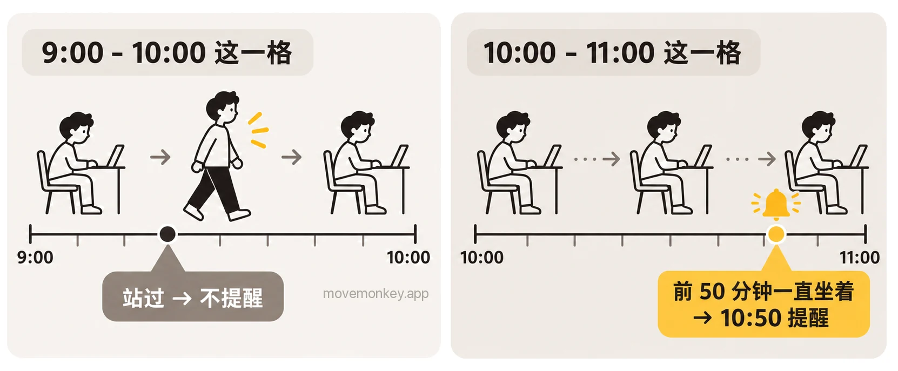
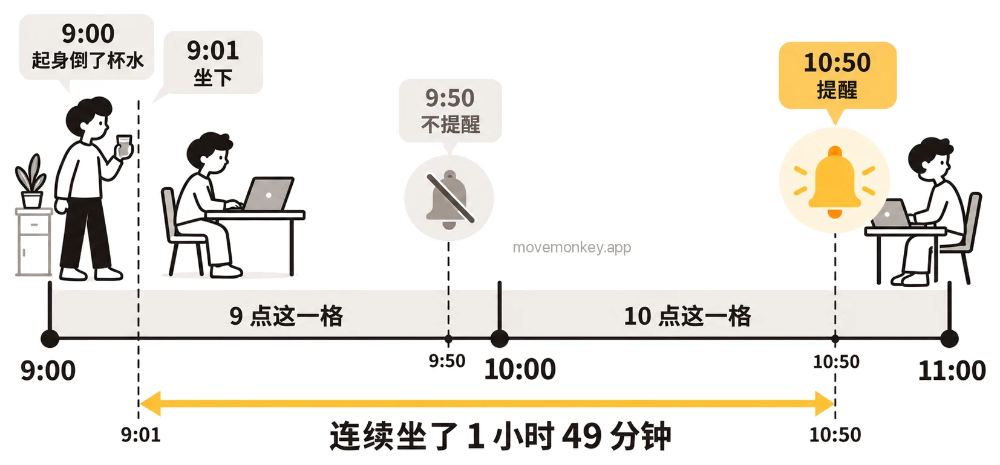

Apple Watch 自带的站立提醒，能做什么，不能做什么
下面按 Apple 的说明，回答关于苹果手表（Apple Watch）站立提醒的几个常见问题。文中的设置路径，我们都在 iPhone 和 Apple Watch 上逐项核对过。
Apple Watch 站立提醒和久坐提醒 App，一张表看清区别
| Apple Watch 自带的站立提醒 | MoveMonkey 久坐提醒 App | |
|---|---|---|
| 什么时候提醒 | 一小时的前 50 分钟一直坐着，在第 50 分钟左右提醒 | 从你上次起身开始，坐满你设定的时间才提醒 |
| 能不能改间隔 | 不能，只有一个开关 | 能，30、45、60 或 90 分钟 |
| 能不能设时段（比如午休不提醒） | 不能 | 能，可设提醒时段和午休 |
| 摘下 Apple Watch 时 | 不提醒 | iPhone 照常提醒 |
| 只用 iPhone | 没有站立提醒 | 可以用 |
| 是否收费 | 免费，Apple Watch 自带 | 核心功能永久免费 |
Apple Watch 站立提醒是怎么算时间的？
Apple Watch 的站立提醒按整点计算：如果一小时的前 50 分钟你一直坐着，它会在第 50 分钟左右提醒你。
iPhone“健身” App 的通知设置里，Apple 的说明是：“若一小时的前50分钟一直保持坐姿，在Apple Watch上接收站立提醒。”[1]
可以把它想成一排格子：每个整点小时是一格，比如 10:00 到 11:00。这一格的前 50 分钟里你站起来活动过 1 分钟，这一格就算站过，不再提醒；一直没有，就在 10:50 左右提醒。它只看格子，不看你连续坐了多久。

因为按整点算，而不是从你坐下开始算，坐多久才会收到提醒并不固定：
- 9:55 起身走动了 2 分钟，9:57 坐下：10 点这一格还没站过，10:50 收到提醒，坐了 53 分钟。
- 9:00 起身倒了杯水，9:01 坐下：9 点这一格已经算站过，9:50 不会提醒；10 点这一格一直坐着，10:50 才提醒。这时已经连续坐了 1 小时 49 分钟。

Apple Watch 按整点一小时一小时地算站立：一小时里站起来并活动至少 1 分钟，这一小时就算站过，记为 1 个站立小时。[2]站立目标是一天要有几个站立小时，可以设为 6 到 16 小时。[3]站立分钟数、站立和锻炼的区别、目标怎么改，见 Apple Watch 的站立是怎么算的？
站立提醒可以改成半小时吗？
Apple Watch 的站立提醒不能改成半小时。它只有一个开关，不能改间隔，也不能设定时段。
想每 30 分钟被提醒一次，可以借用 Apple 自带的“钟鸣”等功能，但它们都只按时间提醒，不管你刚才有没有站起来；每种办法怎么设、要设几条，见 Apple Watch 站立提醒可以改成半小时吗？想每 30 分钟提醒一次怎么办。
至于多久起来一次合适，各方指南和研究怎么说，见久坐多久要起来一次？每小时还是每 30 分钟。
如果你希望坐满 30 分钟才提醒、起身后重新计时，可以考虑 MoveMonkey 这类久坐提醒 App。
晚上睡觉时也会有站立提醒吗？怎么关？
摘下 Apple Watch 睡觉，就不会收到站立提醒。Apple 的说明：Apple Watch 无法检测到它已戴在你的手腕上时，不提供站立提醒。[4]
佩戴 Apple Watch 睡觉时会不会收到站立提醒、怎么只在晚上关掉，见 Apple Watch 晚上也提醒站立？睡觉时怎么关。
如果想要晚上自动不提醒，可以考虑久坐提醒 App MoveMonkey，它只在你设定的提醒时段内提醒。
站立提醒开着却不提醒，是怎么回事？
Apple Watch 的站立提醒已打开却没有收到提醒，通常是因为这一格已经算站过了，哪怕你只是起身接了杯水。所以可能连续坐了一个多小时也没收到提醒，见上文 9:00 倒水的例子。
其他可能的情况：
- Apple Watch 没有佩戴好。Apple 的说明：Apple Watch 无法检测到它已戴在你的手腕上时，不提供站立提醒。[4]
- 打开了勿扰模式或某个专注模式。
- 当天的站立目标已经达成。这一条是用户反映的。
Apple Watch 站立为什么算得不准？
Apple Watch 记录站立，看的是你有没有站起来并活动，不只是有没有站着：一小时里站起来并活动至少 1 分钟，才算这个小时站过。[2]
如果你设定了使用轮椅，“站立”圆环会变成“转动”圆环，站立提醒也随之变成转动提醒。
站了却没记上是怎么回事，见 Apple Watch 站立为什么记不准？
只用 iPhone，没有 Apple Watch，有站立提醒吗？
只用 iPhone，没有站立提醒。Apple 的说明：iPhone 上的“健身” App 显示“活动”圆环；有 Apple Watch，才能看到“锻炼”圆环和“站立”圆环。[5]
只用 iPhone 还能怎么提醒自己起来，见只用 iPhone，没有 Apple Watch，怎么提醒自己别久坐。
如果只用 iPhone 也想要久坐提醒，可以考虑 MoveMonkey，它不需要 Apple Watch 也能用。
Apple Watch 站立提醒的几个常见误解
- “站立提醒在整点提醒。”不对。只有这一小时的前 50 分钟一直坐着，它才会在第 50 分钟左右提醒，见上文。
- “连续坐满 50 分钟才提醒。”不对。它看的是这一小时（比如 10:00 到 11:00）的前 50 分钟，不是从你坐下开始算。
- “站着就算站过。”不对。要站起来并活动至少 1 分钟，这一小时才算站过，见上文。
久坐提醒 App · 即将在 App Store 推出
MoveMonkey：从上次起身开始算的久坐提醒
从你上次起身开始，坐满你设定的时间（30、45、60 或 90 分钟），小猴子才会提醒你。适用于 iPhone 和 Apple Watch，只用 iPhone 也可以；走动或站立后自动重新计时。
早上等你起身后才开始计时，午休可以设为不提醒，提醒时段也由你设定。
轻点“起身动动”，只要走上 1 分钟，小猴子还会为你喝彩。
核心功能永久免费，没有广告。
看更详细的介绍 →